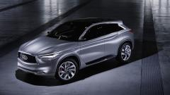
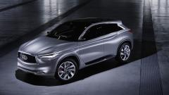

BMW wants to intensify your feeling of sheer driving pleasure even more in future – with the BMW VISION NEXT 100. A vehicle that is in continuous dialogue with you, the driver. A vehicle that recognises your needs, enhances your perception and adjusts to your individual requirements – seamlessly connecting you with intelligent technologies and materials to strengthen your capabilities more than ever before. A vehicle that empowers you to become the “Ultimate Driver” – the best driver you can possibly be..
Mercedes Benz Dolphin concept car is designed by designers Liu Shun, Gao Zhiqiang and Chen Zhilei. This Michelin design challenge 2013's third place winning sportscar concept reflects the principle of sporty, scientific and futuristic. The body structure is constructed from full transparent glass and carbon fiber, light weight design to ensure security as well as reduce the energy consumption. The main theme of this competition is “Half! Lightweight with passion”, thus resulting a concept car that boasts smart technology with lightweight body, effectively reduce any energy consumption for better environment.
The Chevrolet-FNR boasts a futuristic capsule design. It has crystal laser headlights and taillights, dragonfly dual swing doors, magnetic hubless wheel electric motors and a wireless auto-charge system. The Chevrolet-FNR is loaded with a range of intelligent technologies usually seen only in science fiction movies. They include sensors and roof-mounted radar that can map out the environment to enable driverless operation, Chevy Intelligent Assistant and iris recognition start. The Chevrolet-FNR can also serve as a “personal assistant” to map out the best route to the driver’s preferred destination. In self-driving mode, the vehicle's front seats can swivel 180 degrees to face the rear seats, creating a more intimate setting. The driver can switch to manual mode through the gesture control feature.

BMW is often seen as having the latest and greatest new little toys in their vehicles. And the concepts in the i-Vision are no exception. With it’s 3-D instrument cluster display which boasts a 21 inch panorama display screen, one would think a person should be concerned about being distracted while driving. This is apparently not a problem, because BMW has included not only a Bump Assist (which will take a picture of anything that more than nudges the bumper of the car, which would hopefully provide a license plate number to follow up on), they have Assist driving, which real-time navigation, complete with accounting for weather and all traffic conditions, can help if it notices any danger.If that is not enough, there is also the Auto mode which is mostly for long-stretch freeway driving. It allows the driver to take their eyes off of the monotonous road until they are needed again. The car will alert the driver a few seconds before they need to take up the reigns again. While we are not likely to see this car in and of itself, be sure that BMW will be adding these different features to their upcoming models as soon as possible.
Fully electric, the I.D. Concept has a theoretical range of between 400 and 600 km. According to the manufacturer, it should cost about as much as a well-equipped Golf—so let’s say around $30,000—as well as go from 0 to 100 km/h in eight seconds and eventually hit 160 km/h.Not exactly a rocketship, but it should be enough for city driving.Volkswagen also unveiled an autonomous driving system with this concept. It reads the road via its ten lasers and sensors, and is also in constant communication with the cloud. However, VW says they won’t offer this system until 2025 on this car.